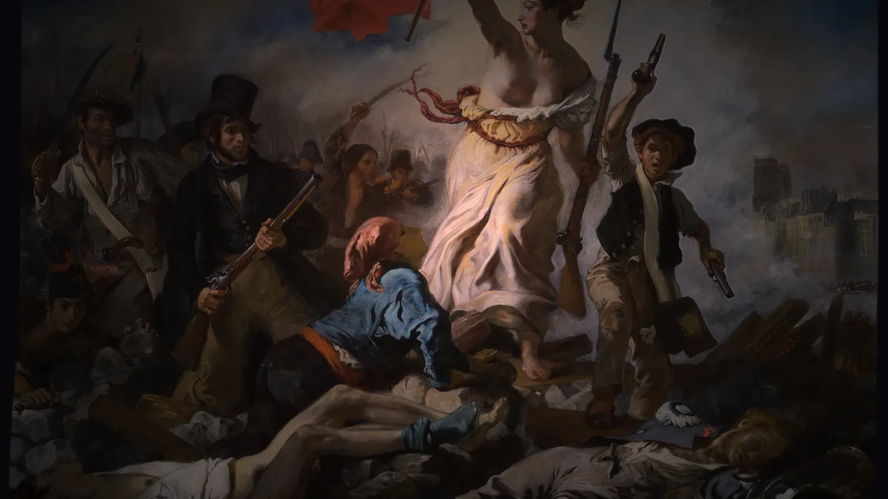
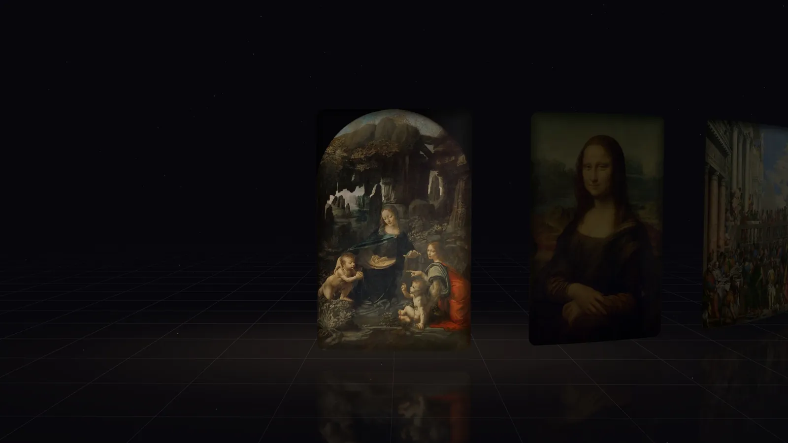
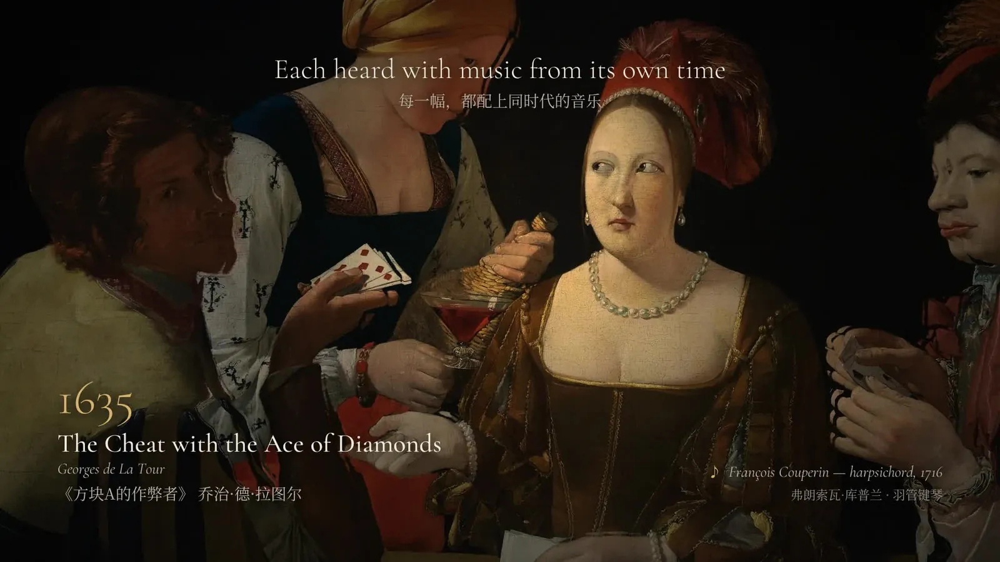

Reflections
Invisible floor reflections
Mirrored meshes were culled. Fix: render both sides.
An agent skill for Claude Code & Codex
A skill that teaches an AI agent to make a single-page site the way Louvre After Dark was made: brainstorm, prototype one piece, build, verify, deploy, then promote it.
The making-of
Ten Louvre paintings, 1483 to 1830, hung on a curved wall in a dark 3D gallery. It took six stages, a few rollbacks and one long list of rules. This skill is that list.
01 Brainstorm
Ask what the page is for, who it is for, and the one feeling it should leave. Read the references for what actually works. Then offer two or three directions with a recommendation, and wait for a clear yes.
我觉得 b 好
I think B is good.要现在开始做吗？
Shall I start now?02 Prototype
Build the hero and a single item first, show it, and get a “满意” (satisfied). Anything that moves gets a short video sample on a branch, so nothing unapproved reaches the live site.

03 Build
?static fallback, and reduced motion respected
04 Verify
After every change, reload and read the page, take a screenshot, then check it on a phone. For video, a fake clock steps the page frame by frame, so captures stay smooth even in a hidden tab.
05 Deploy
Push to GitHub Pages and wait for the build. Then compare every live file with the local one, byte for byte. Only then does the agent say it is live.
# bump ?v=N, commit, push with retries
$ git push
$ gh api repos/…/pages/builds/latest
built 8af849d
$ verify_deploy.sh https://…/louvre-after-dark/ \
index.html js/app.js css/style.css
ok index.html
ok js/app.js
ok css/style.css06 Promote
A share image, a landscape trailer with titles in two languages, and short films that each reveal one hidden detail. Inside the page, small living details: the raft of the Medusa rocks on the swell.

Written into the skill
Design defaults
No sub-pages. Deep views are in-page modes with their own links.
A logo and the switches people need. Taglines and bylines all went.
Cormorant at 300, with gold italics for emphasis.
Never on by itself. The button names what it will do.
Once the frame is set, the delight goes inside each item.
The owner's name appears once, where it means something.
From the bug log
Reflections
Mirrored meshes were culled. Fix: render both sides.
Caching
The browser kept old files. Fix: a no-cache dev server and ?v=N.
Video
Film grain defeats compression. Fix: leave it out of the render (31 MB).
Capture
Hidden tabs throttle frames. Fix: a fake clock injected for recording.
CSS
Scale fought the JS translate. Fix: highlight with a glow.
Sound
Fix: off by default; entering never turns it on.
What's inside
The same skill comes in two copies. The Claude Code copy names Claude's own preview and file tools. The Codex copy uses general wording and adds its own metadata file.
landing-page/
├── SKILL.md the workflow
├── references/
│ ├── design-playbook.md taste, and why
│ ├── tech-recipes.md depth parallax, audio, palettes
│ ├── deploy-github-pages.md
│ ├── promo-video.md capture + ffmpeg
│ └── pitfalls.md bugs and fixes
└── scripts/
├── nocache_server.py
├── recorder.py + capture.js
└── verify_deploy.shInstall
git clone https://github.com/Nikihu-a/landing-page-skill.gitcp -R landing-page-skill/claude/landing-page ~/.claude/skills/Restart Claude Code, then say “make me a one-page site”, or type /landing-page.
git clone https://github.com/Nikihu-a/landing-page-skill.gitcp -R landing-page-skill/codex/landing-page ~/.codex/skills/Restart Codex, then say “make me a one-page site”, or type $landing-page.